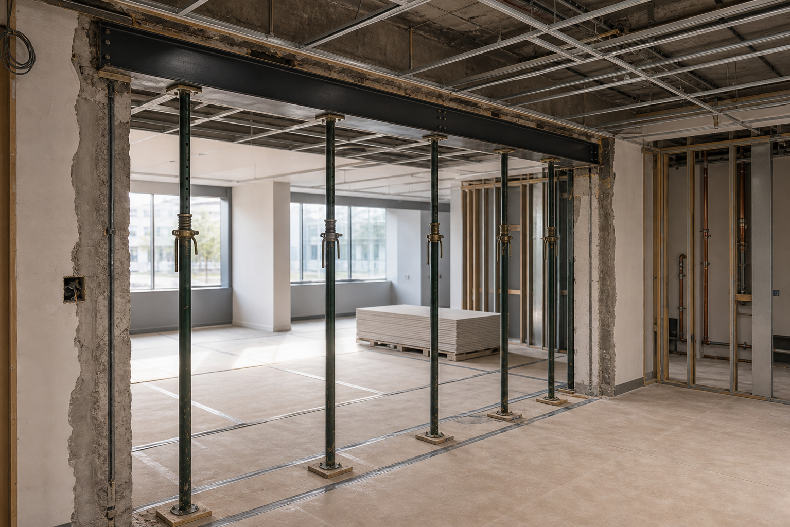
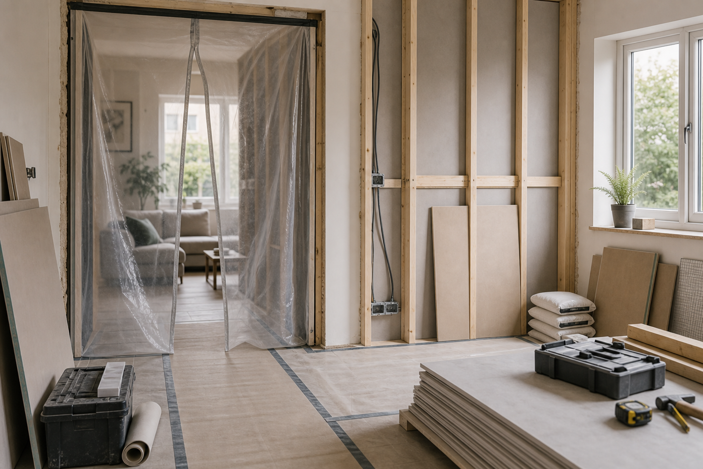
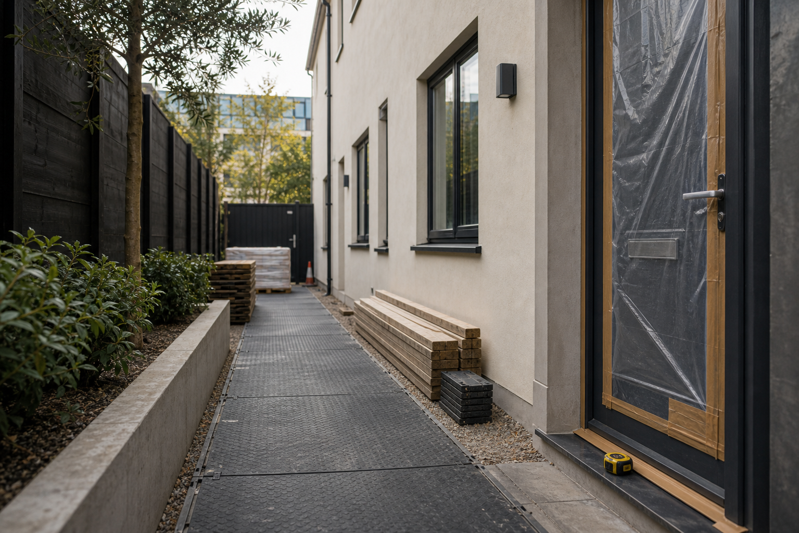
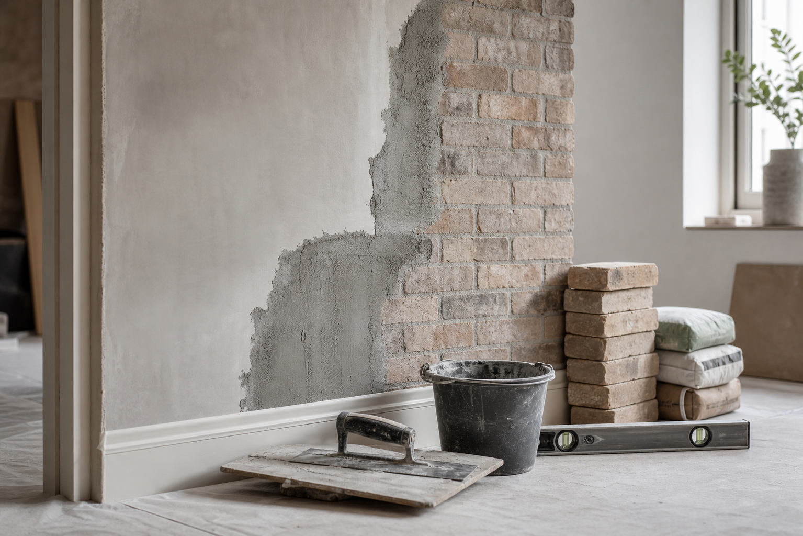
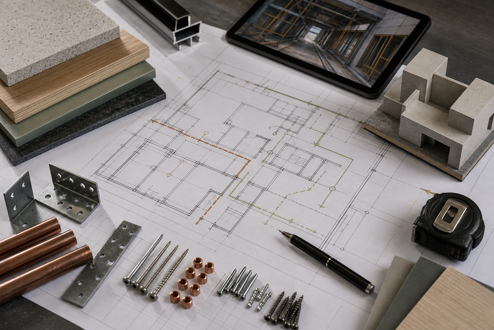

Unit preparation and upgrades
Practical building work for commercial units, back-of-house spaces, customer-facing areas and service-ready premises.
Project types
This page avoids fake case studies. Instead, it shows the kinds of construction work RS BuildPro Ltd is positioned to discuss based on its company category.

Practical building work for commercial units, back-of-house spaces, customer-facing areas and service-ready premises.

Building work for homes that need more useful space, better layout, stronger finishes or improved everyday comfort.

Installation support around building features, internal structures, openings, finishes and site-specific construction details.

Focused construction tasks for properties that need specific improvements, replacements, making good or coordinated upgrades.
Project fit
The strongest enquiries include the property type, access notes, photos if available and the result you want at the end of the job.
